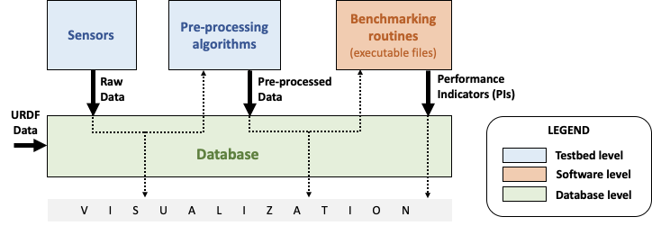

Eurobench Data Format 1. Motivation The experimental datasets expected to populate the EUROBENCH database will engage data coming from a lot of different sensing devices, from different laboratories and will be designed for different benchmarking scenarios and algorithms. In order to store these experiments in a consistent way, a common, comprehensive and flexible data format is necessary. Other motivations for the specification of a unique data format and conventions are: Ensuring automatic computation of Performance Indicators (PIs) based on recorded data. Maximising compatibility between PIs that are common to several protocols (e.g. step length can be calculated in many ways and under many different conditions). Allowing data collection and PI computation to happen independently in different times and location (e.g. enabling any remote user to benchmark an experiment performed in a specific laboratory setting). Any request to extend / change format described here should be done following the contribution policy. 2. Data files and format In this section we propose a common format for the set of files collected during an experiment. An experiment should correspond to a set of files per run [1]. This set of files will be taken as input by a benchmarking routine that, after processing these data, will return a set of benchmarking score(s) (see Figure 1).  Figure 1. Main elements of the data processing chain 2.1. Terminology Generally speaking, we consider 4 different classes of files related to an experiment: Bipedal system specification: file providing specification of the dimension of any bipedal system. It can be describing a human subject, a humanoid, a prosthesis, an exoskeleton. Testbed configuration file: provide values for any configuration parameter needed to reproduce the conditions of an experimentation, or a subset of an experimentation. Raw Data: Data directly collected by the sensors (e.g. marker trajectory). Pre-processed Data: Sensor-actuator agnostic data acquired during the experimentation. The structure of such file is to be compliant with the format agreed in this document. In the following sections, each of these types of data will be defined and detailed. An experiment consists in recording datafiles while the subject (human / robot / both) is performing a given task. The activity can be repeated as follows: to get different runs: a set of runs consists in repeating the same actions (and recording) in the same conditions (for enabling statistics for instance). We would thus acquire several times the same set of information, but the data will be split in different datafiles. to consider different conditions: in that case, a setting is changed. It can be a configuration of the testbed or environmental settings (augment the slope angle), a configuration of the robotic system (support level of the exoskeleton), or an indication to the user (redo the operation with eyes closed). The parameter being changed must be mentioned as a controlled variable, and must be listed in the testbed configuration file. For each condition, we can have a set of runs. to involved several subjects: this is particularly relevant for experiments involving humans. In that case, we can considering having for each subject the execution of the same protocol, i.e involving potentially several conditions, and for each condition several repetitions or runs. 2.2. Filename format, and generalities Generally speaking pre-processed data should follow the following pattern: subject_X_cond_Y_run_Z_[type].csv where: [type] is a string related to the type of information stored in the file. This is the root name of the file. X, Y, Z are integer respectively associated the to the number of subjects involved, the number of different conditions being tested, and the number of repetitions per condition. The subject / cond / run namespaces are only used when it makes sense. An experiment involving a unique subject would have have pre-preocessed files following the pattern: cond_Y_run_Z_[type].csv. An experiment with various subject but unique condition would follow the pattern subject_X_run_Z_[type].csv. At the extreme, an experiment involving a unique subject (or an humanoid), with single condition and no repetition will be described by files with pattern: [type].csv. Unless specified if different, all datafile recorded will have a name using this pattern. Each data file is now described, focusing on the type of information stored (extensions subject, cond and run are skiped for now). Table 1. Pre-processed files format (list to be updated) File name Format Content jointAngles csv Joint Angles jointTorques csv Joint Torques jointTrajectories csv Joint Trajectories grf csv Ground reaction Forces emg csv Electromyography wr_N_config_M_segments (unclear) yaml Segments descriptions files subject_N_anthropometry yaml Anthropometry description humanoid_N_anthropometry yaml Humanoid description gaitEvents yaml Gait Events subject_N_run_R_testbedLabel yaml testbed specifics Generally speaking, all csv files follow the Comma-separated values format, using semicolon as separator. In the following documentation, we will use tables for describing file content. As an example, the following table: label_1 label_2 label_3 value_1 value_2 value_3 would correspond to a file containing the 2 lines: label_1; label_2; label_3 value_1; value_2; value_3 For all csv-based data file type, we will present in the following document a table with: the first line indicating the column labels to use the second line indicating the unit of each column If we can accept that all column may not be present in the file (see next section), we assume that the first row should always contain the labels of all columns present in the file. 2.2.1. incomplete data file If a field or a column cannot be filled (the force sensor only provides force measurement, no torque, or all human joint angles are not tracked), the label should be discarded from the file (i.e no empty column). This way, the wrench file corresponding to a 6D force sensor (OnRobot HEX-E QC, for example) would look as follows: time; force_x; force_y; force_z; torque_x; torque_y; torque_z 0; 1.67; 2.34; 0.83; 0.21; 0.53; 0.07 0.001; 1.62; 2.12; 0.75; 0.29; 0.47; 0.1 0.002; 1.63; 2.41; 0.81; 0.19; 0.56; 0.8 ..... while the wrench file for a 1D force sensor (FlexiForce A101 Sensor, for example) would have the following appearance: time; force_x 0; 1.67 0.001; 1.62 0.002; 1.63 ..... Note that, depending on the benchmarking algorithm requirements, this may prevent the Performance Indicator computation, if a column is expected by the algorithm, but not present in the data file. 2.3. Global reference frame Even though data collected should always be aligned with the specification of the protocol that could supersede the general description provided here, in any measurement involving a global Cartesian reference frame, such reference frame should be placed as proposed in the ISB recommendations, with [Wu1995]: x axis aligned with the gait direction y axis vertical and pointing upwards [Wu1995]: G. Wu and P. R. Cavanagh. ISB recommendations for standardization in the reporting of kinematic data. Journal of Biomechanics, 28(10), 1995. pdf. 2.3.1. Protocol with multiple but similar sensors Some protocols can require the use of various but similar sensors (like a force sensor on each of the crutches). In that case two options are proposed: The protocol should indicate the appropriate option to use. Option 1: one file per device The two files will share the same structure (based on the information stored in it), but will only differ by their name: subject_N_run_R_wrench_tag1.csv for the force sensor labelled tag1 subject_N_run_R_wrench_tag2.csv for the force sensor labelled tag2 The label string (tag1, tag2) to use is defined by the protocol. Both files will contain data following the regular wrench file pattern, i.e.: time force_x force_y force_z torque_x torque_y torque_z 0 1.67 2.34 0.83 0.21 0.53 0.07 0.001 1.62 2.12 0.75 0.29 0.47 0.1 0.002 1.63 2.41 0.81 0.19 0.56 0.8 Option 2: one file gathering the two devices A single file is provided, and use the generic format subject_N_run_R_wrench.csv. The file content is a concatenation of the two readings, with the labels adjusted to distinguish the two devices: time tag1_force_x tag1_force_y tag1_force_z tag1_torque_x tag1_torque_y tag1_torque_z tag2_force_x tag2_force_y tag2_force_z tag2_torque_x tag2_torque_y tag2_torque_z 0 1.67 2.34 0.83 0.21 0.53 0.07 1.67 2.34 0.83 0.21 0.53 0.07 0.001 1.62 2.12 0.75 0.29 0.47 0.1 1.62 2.12 0.75 0.29 0.47 0.1 0.002 1.63 2.41 0.81 0.19 0.56 0.8 1.63 2.41 0.81 0.19 0.56 0.8 … … … … … … … … … … … … … This option is only accepted if the data logged is using the same timestamp. 3. Bipedal system specification files Any bipedal system involved in an experiment is to be described by a specification file. We are promoting the use of the Unified Robot Description Format, URDF, both for robotic systems and human subjects. Note that if an experiment involves a human subject and a wearable device, we expect to get two specification files, one for the human, and another for the wearable. 3.1. Unified Robot Description Format (URDF) file Description: It is the standard file (written in XML) used in ROS to describe a robot’s model (kinematics, dynamics and sensors). This file must be provided if the experiments enroll a humanoid robot. From this file, the number of joints, its labels and the degrees of freedom can be extracted in order to construct the pre-processed joint angles file, and for the definition of the anthropometric file in humanoids. Number of files: all necessary files to describe the complete robotic structure. Name of the file: The main urdf file which includes the rest of urdf files should be named as humanoid_N_anthropometry, where N is the humanoid number. File format: .urdf. The use of .urdf files also has shortcomings such as the lack of friction (important for e.g. walking steeper slope angles). In order to resolve these issues, EUROBENCH will use Gazebo as a simulator. This allows to enhance the .urdf with <gazebo/> tags, permitting the injection of features from the gazebo file format (.sdf) while retaining the most common file format, .urdf. 3.2. WR segments description (URDF) file Description: Standard file used in robotics in XML format to describe the dimensions, the physics properties (COM, mass, friction) and inertial properties of each one of the segments of the worn robot. All these segments are linked by joints (fixed, prismatic, rotational) forming a single tree. Moreover, it allows to use a wide variety of simulators commonly used in robotics such as Gazebo. Number of files: Usually each segment, sensor, or set of segments such as a leg are described in a single file. Finally the whole robot includes all these files in a single file which is the one loaded. Name of the file: wr_N_config_M_segments, where N is the WR number and M is the configuration number (for resizable robots this could be useful). File Format: .urdf. This format file allows to include Gazebo simulation tags, such as friction properties, or visualization properties that allow to simulate more realistic behaviours. This file shall contain the dimensions and inertial properties of each segment of the worn robot with respect to the reference system of the human body segment connected to it. This is needed to enable dynamic simulators to model the human-WR system. 3.3. Human anthropometric measures file Description: This file shall contain all the anthropometric measurements of the human body segment, as detailed in the model document. Name of the file: subject_N_anthropometry, where N = subject’s number. Use appropriate leading zeros for R and N to ensure proper ordering of files. File format: .yaml File structure: Set of lines containing key: value where the key is provided in the body segment table. Units: Meters 3.4. Humanoid anthropometric measures file Description: This file shall contain all the anthropometric measurements from the humanoid robot mapped to the above proposed human segments (see Table 2 and Figure 3). Name of the file: humanoid_N_anthropometry, where N = humanoid’s identifier. File format: .yaml File structure: Set of lines containing key: value where the key must contain the corresponding robot segment name. Units: Meters. 4. Testbed configuration file Description: This file shall contain all relevant information for reproducing the experiment in similar conditions. It can contain values of configuration of the used testbed (e.g. for slope: slope angle; for stairs: step height; etc…). It can also contain configuration parameters that may be needed by the algorithms for computing the performance indicators. It can also contain subject behavior constraints set by the experimenter (ask the human to perform the action eyes closed, or use different tuning parameter set for the humanoid, or a different support level for the exoskeleton…). File format: .yaml File name: testbed.yaml. File structure: Set of lines containing key: values. Where each key is one testbed-related data. keys must be self-explicative. Different words on the same key must be separated by underscore. keys must be written in lower case style. If a protocol involves several equipments, then all configuration information should be placed in the same file, using the pattern device_name_param_name to describe each of the device. For instance, if a protocol involves a push stick and an instrumented garment, we would consider the following configuration file: push_tick_param_1: 3.14 push_tick_param_2: 0 garment_param_i : [15, 46] garment_param_j: 2 The exact content of the file is defined by the protocol itself. All controlled variables, as defined in the template spec should be defined in that file. 5. Raw Data Files Description: This set of files should contain all data collected directly from the sensory system/s present in the benchmarking scenario (i.e. 3D marker positions, IMUs signals, forces from platforms, etc…). Number of files: One file per run and sensory system should be provided. File format: These files are not supposed to be processed automatically by the EUROBENCH Benchmarking routines, so that a specific format is not defined. Data can be provided as the device drivers provide them (e.g. c3d, rosbag, .txt, .csv, …). However, a description of the file content and acquisition frequency should be provided (like Readme.md or Readme.txt) to help the user opening and understanding these files. 6. Pre-Processed Data Files This set of files should contain all the data processed from the raw data and needed for running a specific benchmarking routine. As described in each of the following sub-sections, we envision one format per type of information. These files should be preferably agnostic of the specific sensor used to capture it, so that the benchmarking routines can be launched independently of the acquisition devices. All time-series files should contain timestamped information, since timestamp reference will be shared by all files describing a same experiment run. An experiment can provide one or more of the following file types. If a testbed or a benchmarking routine requires a data type not included in this document, please contact the EUROBENCH Team. We will work together with you to create the required data file type. 6.1. Joint angles file Description: This file shall contain the time-series of all measured joint angles, expressed in YXZ Cardan Angles, as defined in the Angle Definition section. filename root: jointAngles where N = subject’s number and R = run number. Use appropriate leading zeros for R and N to ensure proper ordering of files. File format: .csv File structure: Table 2. Joint angle file structure and unit time r_hip_y r_hip_x r_hip_z r_knee_y r_knee_x r_knee_z … … … sec deg deg deg deg deg deg … … … Joint labels should refer to the names provided within the human model document. 6.2. Joint torques file Description: This file shall contain all the measured joint torques. filename root: jointTorques File format: .csv File structure: Table 3. Joint torque file structure and unit time r_hip_x r_hip_y r_hip_z r_knee_x r_knee_y r_knee_z … … … sec N.m N.m N.m N.m N.m N.m … … … Joint labels should refer to the names provided within the human model document. 6.3. Joint center 3D trajectories file Description: This file shall contain all the measured trajectories of the joints. Filename root: jointTrajectories. File format: .csv File structure: Table 4. 3D joint center file structure and unit time r_ankle_x r_ankle_y r_ankle_z r_knee_x r_knee_y r_knee_z … sec m m m m m m … Joint labels should refer to the names provided within the human model document. 6.4. Body Center of Mass 3D trajectory The body Center of Mass (COM) is frequently considered in biomechanics, as it reflects the motion of the whole body. It is usually defined as the unique point where the weighted relative position of the distributed mass sums to zero (wikipedia) Description: This file shall contain the estimated COM position along time. Filename root: com. File format: .csv File structure: Table 5. COM position file structure and unit time x y z sec m m m 6.5. Angular Momentum around the Center of Mass The angular momentum of a body is a vector quantity that represents the magnitude and the direction in which the body rotates about a reference point [Bennett2010]. Description: This file shall contain the estimated angular momentum around the COM along time. Filename root: angularMomentum. File format: .csv File structure: Table 6. Angular Momentum file structure and unit time x y z sec Js Js Js where Js stands for Joule second (equivalent to kgm²s^{⁻1}). bibliography: [Bennett2010]: B.C Bennett, S.D. Russell, P. Sheth, M. F. Abel. Angular momentum of walking at different speeds. Human Movement Science, 2010 (link) 6.6. Inertia Tensor Description: The inertia tensor describes the body´s resistance to rotational motion in response to a torque. Filename root: inertiaTensor. File format: .csv File structure: Table 7. Inertia tensor file structure and unit time xx xy xz yx yy yz zx zy zz sec kgm² kgm² kgm² kgm² kgm² kgm² kgm² kgm² kgm² 6.7. Wrench file Description: This file shall contain wrench (force and torque) measured by a force sensor. Filename root: wrench File format: .csv File structure: Table 8. Wrench file structure and unit time force_x force_y force_z torque_x torque_y torque_z sec N N N N.m N.m N.m 6.8. Ground Reaction Forces file Description: This file shall contain forces measured by force platforms. Filename root: grf File format: .csv File structure: Table 9. Ground Reaction Forces file structure and unit time f_x f_y f_z p_x p_y p_z t_x t_y t_z sec N N N m m m N.m N.m N.m where f stands for force, p for the center of pressure, and t for torques. 6.9. Electromyography file Description: This file shall contain all the recorded EMG signals from the human subject. Filename root: emg File format: .csv Table 10. EMG file structure and unit time label_1 … label_i … s mV mV mV mV where label_i is to be a tag described in table List of EMG muscles and labels considered.. Table 11. List of EMG muscles and labels considered. Muscle Label Abductor Longus AbLo Biceps Femoris BiFe Gastrocnemious Lateralis GaLa Gastrocnemious Medialis GaMe Gluteus Maximus GlMa Gluteus Medialis GlMe Gracilis Gra Peroneus Longus PeLo Rectus Femoris ReFe Sartorius Sar Semimembranosus SeMe Semitendinosus SeTe Serratus Anterior SeAn Soleus Sol Tensor Fascia Latae TeFa Tibialis Anterior TiAn Extensor Digitorum ExDi Vastus Lateralis VaLa Vastus Medialis VaMe Units: Millivolts. 6.10. Gait events file Description: This file shall include all detected (or calculated) heel strike and toe off gait events. Filename root: gaitEvents File format: .yaml File structure:Set of lines containing key: vector of values. Where the key is provided on the last column of Table 3. File content: See Table 3 Table 12. List of gait events and its considered labelling Gait Event Label Right Heel Strike r_heel_strike Left Heel Strike l_heel_strike Right Toe Off r_toe_off Left Toe Off l_toe_off Units: Seconds 6.11. Physiological data Description: We gather in that concept measurements of the heart/breathing system activity and skin response: Heart rate: speed of the heartbeat measured by the number of contractions (beats) of the heart per minute (bpm) (link). Label: hr Heart rate variability (HRV): is the physiological phenomenon of variation in the time interval between heartbeats. It is measured by the variation in the beat-to-beat interval (link). Unit is set to sec (second). Label: hrv Respiration rate: rate at which breathing occurs (link). Unit is bpm (breaths per minute). Label : rr Galvanic skin response: refers to changes in sweat gland activity that are reflective of the intensity of our emotional state (link). Unit is mS (milliSiemens). Label: gsr Electrocardiogram (ECG): electrical activity of the heart as perceived by electrodes placed on the skin (link). Unit is mV (milliVolt). Label: ecg Filename root: physiological File format: .csv File structure: Table 13. Physiological file structure time hr hrv rr gsr ecg sec bpm sec bpm mS mV Note that recording all these dimensions may not be required by all protocols. Unmeasured dimensions should be discarded by removing the related label from the file. Also, if different acquisition devices are used, and if the acquisition frequency is different, then more specific data file could be generated (like physiological_ecg if ecg presents a different frequency). 6.12. Testbed / Platform specific data recorded Description: In some protocol, an instrumented device may have been designed to collect a set of sensor data. We consider the possibility of gathering sensed data in a common file under the following conditions: all data recorded should share the same timestamp. the file contains labelled column as mush as possible, the column labels should be following the data format proposed in the data types previously described in this document. Filename root: platformData File format: .csv File structure: specific to the testbed. Label row mandatory. 6.13. Human Factor metrics We propose a common format for the set of files containing data regarding the user subjective evaluations of the experience of using an exoskeleton. We describe here all questionnaire-like output of an experimentation. These questionnaires can be filled by an operator observing the experimentation, or by the human subject taking part of the experimentation. This is defined by the related protocol. Here we focus on the representation of the questionnaires and related answers. The representation of any questionnaire is divided into two components: The description of the questionnaire itself: Factor Meta Data File The representation of the questionnaire answer: Factor Data File We propose using csv format for both. 6.13.1. Factor Meta Data File Description: This file contains the specification of each question of the questionnaire. That file should be part of the protocol itself. It should not vary from an experimentation to another. Name of the file: questionnaire_name.csv, where name should be a unique identifier given to that questionnaire model. File format: .csv File structure: a table-like structure with the following content: Table 14. Meta Data File structure sample itemID type options text answer_unit 0 This is the title of the questionnaire? 1 value float > 0 Time required to donning the exoskeleton sec 2 value int>0 Number of steps climbed and down number 3 boolean Did the user stumble when ascending stairs boolean X likert [[1, "I strongly disagree”, [2, "I disagree”], [3, "I slightly disagree”], [4, "Neutral”], [5, "I slightly agree”], [6. "I agree”], [7, "I strongly agree”]] The use of the device was very easy. Y text How is perceived the system by the user Z multiselect [“Left knee”, “left ankle”, “right knee”, “right ankle”, “none”] Were you perceiving unexpected pressure on some limbs? W select [“Left knee”, “left ankle”, “right knee”, “right ankle”, “none”] Which limb was receiving most pressure? With: itemID: unique identifier (in the file) of the item. It can be a string, and contain any complex structure. The only constraint is that it has to be unique for the given questionnaire. type: definition of the type of answer expected Possible values: value, text, boolean, likert, reverse_likert, select, multi_select options: additional information to represent the answer options (if needed) text: item text unit: answer unit indication (if any) Note that the 5 columns previously detailed are the minimum ones. A questionnaire definition may include more columns if this is needed for special computations. 6.13.2. Factor Data File Description: This file only contains the answers to each of the question asked. Filename : subject_N_questionnaire_name.csv, where name refers to the Factor Meta Data File this questionnaire answer is related to. File format: .csv File structure: a table structure with the following content: Table 15. Meta Data File structure sample itemID answer 2 4 1 4.8 Y "The installation was complex" X 2 3 True Z [0, 3] W 3 With: itemID: the ID of the question answered, in relation with the questionnaire description file answer: the response of the person interviewed The administration order being implicitly encoded in the row order (i.e first question: 2, 2nd: 1, 3rd: Y, …. 7. Examples This section is still under construction. Our intention is to provide a complete set of examples for three fields: human, humanoids, and wearable robots locomotion dataset. In the following we use {} to factorize filenames: Name subject_{01_03}_jointAngles.csv, is used to name the three files subject_01_jointAngles.csv, subject_02_jointAngles.csv and subject_03_jointAngles.csv. Name subject_{01_03}_run_{01-02}_jointAngles.csv refers to files: subject_01_run_01_jointAngles.csv, subject_01_run_02_jointAngles.csv, subject_02_run_01_jointAngles.csv, subject_02_run_02_jointAngles.csv, subject_03_run_01_jointAngles.csv, subject_03_run_02_jointAngles.csv 7.1. Example 1 The Laboratory HumanLab has done a study on Parkinson’s patients and recorded two subjects during overground walking, with inertial sensors. Three runs were recorded per subject. These are the files that they have produced to be compatible with the EUROBENCH Database. Raw Files (format suggested, not mandatory) raw_data.txt subject_{01-02}_run_{01-03}_imu_raw.cappa Anthropometric Files subject_01_anthropometry.yaml subject_02_anthropometry.yaml Electromyography Files subject_{01-02}_run_{01-03}_emg.csv Gait Events Files subject_{01-03}_run_{01-03}_gaitEvents.csv Testbed configuration related data file testbed.yaml There is only a unique testbed configuration file, as all runs are repetitions of the same experimental conditions. 7.2. Example 2 The Laboratory ExoLab has done a study on healthy people wearing an H2 exoskeleton and recorded one subject during slope ascending, with optical markers. Three runs were recorded. The experiment was then repeated changeing the support level of the exoskeleton Raw Files (format suggested, not mandatory) raw_data.txt cond_{01-02}_run_{01-03}_markers_raw.cappa Anthropometric Files anthropometry.yaml Gait Events Files cond_{01-02}_run_{01-03}_gaitEvents.csv Testbed related data file cond_{01-02}_testbed.yaml label subject is discarded as a unique subject is considered. The level of exoskeleton support is specified through a variable in cond_01_testbed.yaml and cond_02_testbed.yaml files. 7.3. Example 3 The Laboratory HumanoidLab has done a study on the new walking pattern generator and recorded the robot during flat ground walking. Two runs were recorded. These are the files that they submit to be compatible with the EUROBENCH Database. Raw Files (format suggested, not mandatory) rosbag_{01-02}.bag (containing /tf topic) humanoid_markers_raw_{01-02}.cappa .urdf File humanoid.urdf Gait Events Files run_01_gaitEvents.csv run_02_gaitEvents.csv Testbed related data file testbed.yaml 7.4. Example 4 A laboratory studied human behaviour during sit-to-stand activity. Two subjects were involved. Each subject were asked to perform 5 sit-to-stand, and data collection was stopped once the person was standing up. Then the operation was repeated with eyes closed, to see the importance of the visual clue. An instrumented chair was used, which is collecting a set of measures, in a format specified by the protocol. Anthropometric Files subject_{01-02}_anthropometry.yaml Gait Events Files subject_{01-02}_cond_{01-02}_run_{01-05}_jointAngle.csv Chair sensors data subject_{01-02}_cond_{01-02}_run_{01-05}_platformData.csv Testbed related data file cond_{01-02}_testbed.yaml The eyes status (open/closed) is set trhough a parameter in files cond_01_testbed.yaml and cond_02_testbed.yaml. 8. References David A. Winter. Biomechanics and Motor Control of Human Movement, 4th Edition. Willey (2009) Vicon Documentation: Plug-in Gait kinematics variables Vison Documentation: About the Plug-in Gait model 1. Each repetition of an experiment. Synonym of trial (e.g. One experiment has 10 subjects and each subject executes 5 runs).